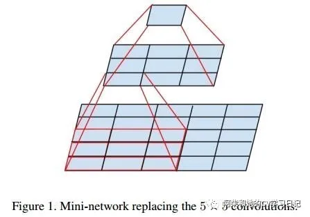
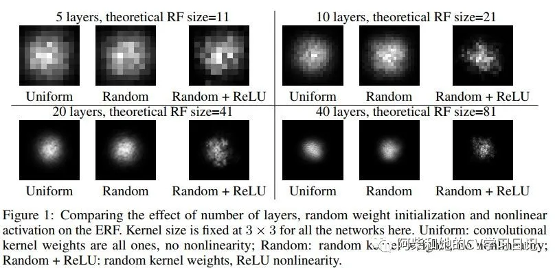
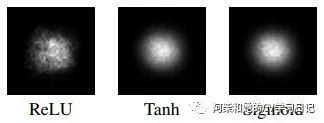
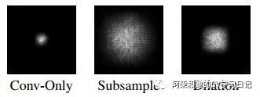
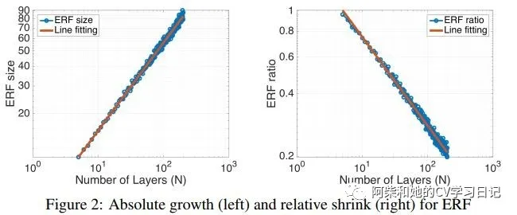
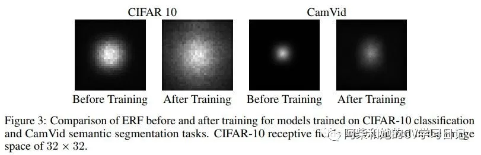

对深度学习中感受野的理解与思考
时间：2020-3-2
摘要：在许多视觉任务中，感受野的大小是一个关键问题，因为输出特征图中的每一个像素必须响应图像中足够大的区域，以捕获关于大型对象的信息。近年来，深度卷积神经网络(CNNs)在诸多问题上取得了巨大的成功。在这篇博客中，我们关注的是感受野在计算机视觉中的应用---它是最近许多任务(包括图像识别、目标检测、语义分割、图像字幕等)的显著改进背后的驱动力。关注左侧公众号，获取更多深度学习的知识
一、语法
深度学习中一个最基本的概念就是感受野（receptive field ）。特征图中每个单元的值取决于卷积网络输入的一个区域，那么输入中的这个区域是该单元的感受野。以下图为例：
这个图代表的是一个两层的卷积神经网络。每一个卷积层的kernel size=3。最下面的5×5的图是卷积神经网络的输入特征图。通过在输入特征图上划窗，计算得到的是一个值，这个值是通过计算原来输入特征图上3×3面积上的值得到的结果，那就说经过这个3×3卷积以后，第二层特征图的感受野就是3×3。以此类推，两个kernel size=3的卷积层的连续处理之后，那么上图最上面的特征图的那个值对应最下面输入特征图的5×5的感受野。
二、实际感受野
当然，按照上面所计算的感受野仅仅是理论感受野。2016年，在NIPS2016中的提出了实际感受野的概念 [1]. 理论感受野指出：
1) 不是理论感受野中区域中每一个像素都对输出单元有相同的贡献。实际上，理论感受野中的像素对输出单元输出单元的贡献是一个高斯分布（即感受野中心区域部分部分贡献较大，越往边缘贡献越小。仔细想想，这是一个很符合常识推论的东西，很显然，中心区域的像素，在计算输出单元多次的卷积中，使用了）。论文把贡献占比较大的理论感受野中的区域称为有效感受野，它仅占理论感受野的一部分；下图是实际感受野随着卷积层数增多的变化情况：
2) 使用不同的激活函数，产生的实际感受野不相同。加入ReLU使得分布的高斯性更差。一个原因是ReLU的机制使得输入小于0的部分都归零，这样很容易得到输出平面上的中心像素输出为0，这意味着没有值可以从感受野到达输出单元，因此梯度都是零。
3) 使用不同的卷积方法，产生的实际感受野不相同。如我们所见，下采样卷积（步长大于等于2）和扩张卷积都能显著增加效应感受野。
4）随着网络层数的加深，实际感受野呈现根号n级递增，实际感受野占理论感受野的比例是按照级1除以根号n递减。
5) 神经网络的训练，可以有效的增加实际感受野的区域。对于分类任务，作者在CIFAR-10数据集上训练了一个包含17个剩余块的ResNet。在训练结束时，这个网络达到了89%的测试精度。在这个实验中，没有使用池化或下采样，只关注具有Resnet的跳层连接的架构。这个网络的准确性不是最先进的，但仍然相当高。在图3中，我们分别在训练开始时(使用随机初始化的权值)和训练结束时(当达到最佳验证精度时)在32×32图像空间上显示了有效感受野。注意，我们的网络的理论感受野实际上是74×74，大于图像的大小，但是有效感受野仍然不能完全填充图像。比较训练前后的结果，我们可以看到有效的接受域有了明显的增长。对于语义分割任务，作者使用CamVid数据集进行城市场景分割。我们训练了一个前端模型 [2]，它是一个纯卷积网络，可以以稍低的分辨率预测输出。这个模型包括4个下采样操作，每个操作的步长为2。由于这些下采样操作，输出是输入大小的1/16。对于该模型，顶层卷积层单元的理论感受野为505×505。然而，如图3所示，在训练开始时，有效感受野仅得到直径为100的一小部分。我们再次观察到，在训练过程中，ERF的大小增加，在最后它几乎达到直径约150。
如何增大有效感受野
上述分析表明，实际感受野只占理论接受域的一小部分，这对于需要很大感受野的任务是不可取的。本质上，有两种增大感受野的方法：
不同的初始化权重方法：
增加有效感受野的一个简单方法是控制初始权重。提出了一种新的随机权值初始化方案，使卷积核中心的权值更小，边缘的权值更大;同时作者注意到，无论我们如何改变权重，有效感受野仍然呈高斯分布，因此上述建议只能部分解决问题。
框架的改变：：
一种可能更好的方法是对CNNs进行架构更改，这可能以更基本的方式增加有效感受野。例如，我们不需要将CNN中的每个单元连接到一个局部的矩形卷积窗口，而是可以使用相同数量的连接将每个单元稀疏地连接到更大的底层区域。扩张卷积就是属于这一类，但我们可以更进一步，使用不像网格的稀疏连接，例如使用可变形卷积。
引用：
[1] Wenjie Luo, Yujia Li, Raquel Urtasun, Richard ZemelUnderstanding the Effective Receptive Field inDeep Convolutional Neural Networks architecture for robust semantic pixel-wise labelling. 29th Conference on Neural Information Processing Systems (NIPS 2016), Barcelona, Spain .
[2] Fisher Yu and Vladlen Koltun. Multi-scale context aggregation by dilated convolutions. arXiv preprint arXiv:1511.07122, 2015.